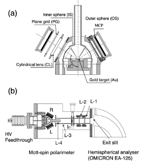

スピン角度分解光電子分光装置の開発
固体中における電子状態は「運動量」・「エネルギー」・「スピン」という３つの自由度で記述することができる。電子の運動量とエネルギーの対応関係（バンド分散）については、角度分解光電子分光 (ARPES) 実験を行うことで直接観測することができ、現在までに多くの研究結果が報告されている。一方で、もう１つの電子の自由度であるスピンを spin-up と spin-down の２つの状態に分離して観測することは技術的に非常に困難である。しかし、これはスピンに依存した電子状態の解明にとって非常に効果的である。近年、フラッシュメモリや DRAM (Dynamic Rondom Access Memory) などのエレクトロニクスデバイスは、世界中で研究開発が盛んに行われており、性能の向上が著しい。これらのデバイスは、コンデンサーに蓄積された電子の電荷でデータを記録しており、読み書き速度や揮発性の問題から次世代のデバイスの開発が要望されている。現在、新しいデバイス技術として、電荷だけではなく内部自由度であるスピンも制御するスピントロニクスデバイス MRAM (Magnetoresistive Random Access Memory) が提唱されている。このように、応用の面からも電子のスピンに対する注目大きくなっている。

(a) モット型スピン検出器 (b) スピン角度分解光電子分光装置の概略図
(a) モット型スピン検出器 (b) スピン角度分解光電子分光装置の概略図
広島大学放射光科学研究センターと光物性研究室は、スピン角度分解光電子分光 (spin- and angle-resolved photoelectron spectroscopy : SARPES) 装置の開発を行い、スピン検出器の小型化と検出効率の大幅な向上に成功した。現在では、スピン偏極したフェルミ準位近傍の表面電子状態や磁性超薄膜のバルクおよび表面電子状態などの研究を行っている。
S. Qiao et al., Rev. Sci. Instrum. 68, 4390 (1997).
S. Qiao et al., Rev. Sci. Instrum. 68, 4017 (1997).
K. Iori et al., Rev. Sci. Instrum. 77, 013101 (2006).